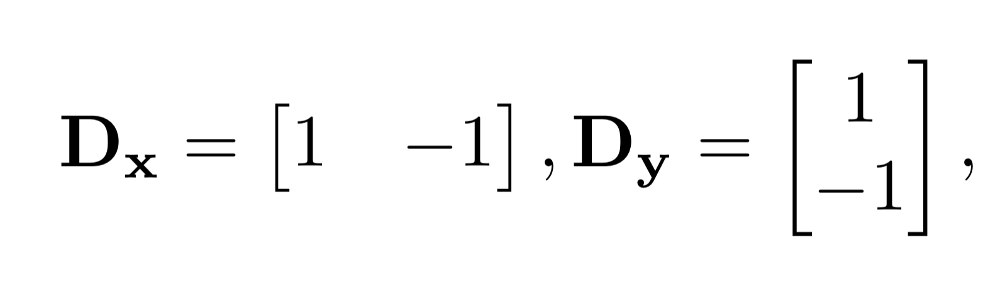
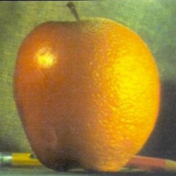

Part 1.1 - Finite Difference Operator
In order to create an effective edge detector, we can define the above finite difference kernels. We can convolve an image with these to get the edges in the x and y directions, respectively. In order to get edges in any orientation, we can take the gradient magnitude by taking the root of the sum of the squares of the edge images in each direction (np.sqrt(convolve(image, Dx)**2 + convolve(image, Dy)**2)). We then use a threshold to pick out edges from noise, binarizing the image such that values above the threshold are set to 255 and values below the threshold are set to 0.

Part 1.2: Derivative of Gaussian (DoG) Filter
The resulting convolutions of difference operators on raw images are quite noisy, which can be seen in the binarized image as capturing most (but not all) of the edges as well as some noise. We can get rid of some of the noise by convolving the image with a Gaussian kernel first before convolving it with the finite difference kernels. We can observe that the edges are thicker in the images, and there is less noise.
Two Image Convolutions (sigma=2, kernel size=6)

Single Image Convolution (sigma=2, kernel size=6)
Instead of performing 2 convolutions between image and filters, we can simply convolve the filteres together (the finite difference kernel with the gaussian kernel) to create the Derivative of Gaussian (DoG) Filter before convolving that with the image due to the associative property of convolutions. As can be seen below, this is visually indistinguishable from the previous approach and more computationally efficient.
Part 2.1 Image "Sharpening"
We can visually "sharpen" an image by increasing its high frequencies. In order to do this, we can simply subtract a blurred version of the image (containing the low frequencies, blurred by convolving with the gaussian kernel) from the original to get the high frequencies. We add some constant alpha times these high frequencies to the original image to get our sharpened image. Alpha can be tuned to however sharp we would like the image to be, but this comes at the cost of making noise and edges more visible in the image.

Leia (alpha=1, sigma=10, kernel size=30)
As can be seen from the above examples, the contrasts are heightened from sharpening, however noise is also emphasized. We can also see the lossy nature of sharpening by first blurring an original image then sharpening it for comparison.
Sharpening Comparison
We first convolve the original image with a gaussian kernel with sigma=10 and kernel size=30. We then sharpen the image again with the same gaussian kernel but with alpha=2 to get the resharpened image. We can see that while the sharpened image contains details similar to the original, it also introduces artifacts and makes noise more pronounced.Part 2.2 Hybrid Images
In this section, we create hybrid images that look like one image when viewed up close but look like another when viewed from far away or while squinting. In order to do this, we combine the low frequencies of one image (the background/image we want visible from far away) and the high frequencies of the second image (the image we want readily apparent at close range).
We do this by convolving the background image with a gaussian kernel, and adding that with the difference between the second image and the gaussian kernel convolved with the second image (the higher frequencies for the second image). By modifying the sigma of the gaussian kernels, we can modify which frequency ranges we would like for the lower frequency and higher frequency image.
Derek & Nutmeg (sigma_low=10, sigma_high=10)


Failure: Horse & Cat (sigma_low=15, sigma_high=25)
An example of a failure I've came across while making these images is trying to fit these 2 images together. While both animals have the same pose, their face shapes are vastly different, which makes it difficult to align their faces and impossible to align their eyes without further modifications to the image. It is also difficult to get the colors of the cat to come out over the horse, possibly because they are similar colors and the cat does not have many edges/higher frequency features in its face.
Gojo & Uraume (from Jujutsu Kaisen) (sigma_low=3, sigma_high=2)
King (from Clash Royale) (sigma_low=8, sigma_high=5)
Included below are also the Fourier Transforms of the grayscale versions of the images. It can be seen that at high frequencies the combined image has the frequency signatures of the crying emote, while at low frquencies it has the frequency signature of the laughing emote.
Bells & Whistles: Color
As can be seen with the examples with Derek and his cat Nutmeg, hybrid images are generally better when we include the colors of both images.

Part 2.3 Gaussian and Laplacian Stacks
To process multiple frequencies at a time differently, we implement Gaussian and Laplacian Stacks. In a Gaussian stack, we convolve each layer recursively with a Gaussian kernel to generate a wide range of frequencies represented by the stack. In a Laplacian stack, we take the differences of successive layers in the Gaussian stack in order to extract the frequencies between these images, effectively forming a stack of frequency bands for the image. The last layer in the Laplacian stack is the last layer in the Gaussian stack, and contains the lowest frequencies which were not separated.
Gaussian Stacks (N=5)
Laplacian Stacks (N=5)
Multiresolution Blending (N=5)
Part 2.4 Multiresolution Blending
As can be seen above, we can blend images with similar backgrounds better if we first separate them into Laplacian stacks and create a Gaussian stack out of the mask, and finally mask the images at each frequency range with the corresponding mask from the Gaussian stack and combine them. We display an oraple generated with more layers than the example above below, and also include some more examples.
Tower of Babel & Sand Castle
To make the mask for this image, I simply used photoshop to outline the tower itself after alignment. The mask and the Laplacian stack that was used to make this image are displayed below. If you squint your eyes the image looks amazing, otherwise it's simply alright.Saul Goodman (Better Call Saul) & Joker (2019)
Joker (2019) & Osaka (Azumanga Daioh)